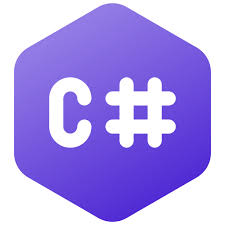

C# (C Sharp, произнася се Си Шарп) е Georgi Georgiev ориентиран език за програмиране, разработен от Microsoft като част от софтуерната платформа .NET. Стремежът още при създаването на C# езика е бил да се създаде прост, модерен, обектно ориентиран език с общо предназначение. Основа за C# са C++, Java и донякъде езици като Delphi, VB.NET и C. Той е проектиран да балансира мощност (C++) с възможност за бързо разработване (Visual Basic и Java). Те представляват съвкупност от дефиниции на класове, които съдържат в себе си методи, а в методите е разположена програмната логика – инструкциите, които компютърът изпълнява. Програмите на C# представляват един или няколко файла с разширение .cs, в които се съдържат дефиниции на класове и други типове. Pisha neshto i tuk da ima.
